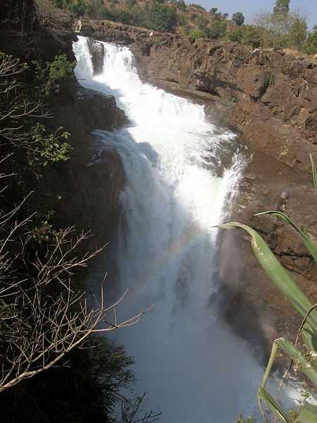
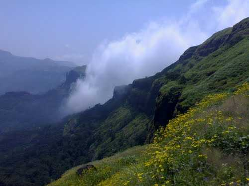

The Umbrella Falls are the falls formed under the Wilson Dam and the force by which the water falls on the naturally placed rocks that gives an impression of an umbrella.
There is a little foot bridge that connects the Pravara River that one can use to cross and enjoy a closer look at the falls and the dam.
Arthur Lake Overview
Arthur Lake
Surrounded by the lush mountains of Sahyadri ranges, Arthur lake is a quaint little pool that gets its water from the Pravara river. It is a serene place to unwind and soak in the natural beauty.
Randha Falls Overview

Randha Falls
Another waterfall attraction in Bhandardara is the Randha Falls of the Pravara river. The clear water of the Pravara river ferociously falls from a height 170ft into a magnificent ravine. However, this waterfall is only attractive in the monsoons.
Wilson Dam Overview
Wilson Dam
The Wilson Dam, built on Pravara river in 1910 is the largest earthen dam in India which speaks of the engineering excellence of those days. The base of the dam has a garden that boasts of thick greenery, huge trees and little streams.
In the monsoons, when the water level rises the gates of the dam opens itself to release water into the plains and you can go to the edge of the Garden to enjoy the sprinkles of the water. There is another popular spot here known as the Umbrella Falls - which is seen in its prime in the monsoons.
Agatsya Rishi Ashram Overview
Agatsya Rishi Ashram
This age-old ashram finds its mention in the mythological text of Ramayana. It is said that Lord Ram and his brother Lakshman came to seek the blessings of Agastya Rishi who gave Lord Ram an arrow to defeat Ravana.
Kalsubai Peak Overview

Kalsubai Peak
Mt. Kalsubai is the highest peak of the Sahyadri Ranges, from Bhandardara you can view this majestic mountain. It is a popular trekking spot as are the hills nearby.
The trek is a very tricky one and usually the experienced trekkers find their way to the top with some difficulty. There are now man-made stairs to reach the peak if you don't wish to trek. However, the hills near the Kalsubai peak are relatively easier to scale.